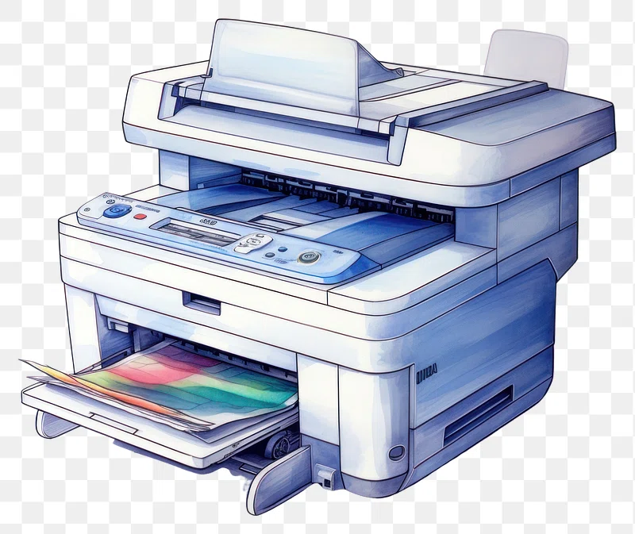

Technology and its impacts
Applying mathematical understanding to real goals—especially ones that may be repeated—is generally referred to as technology. The term "technology" can also refer to the successful products of these tasks, covering both material instruments like machinery or equipment and unnecessary ones like software. In daily life and research and development, technology is necessary.

Pros of technology
More Effective Interaction: Thanks to technology, communicating with people around the world is now easier than ever. We can interact thanks to the growth of the internet and messaging applications with loved ones, coworkers, and friends in actual time, wherever they may be.
Access to Information: : You can look for and find details regarding almost any topic through the internet. On top of that, despite where they live, people can now access courses of study and employment with the help of technology.
Healthcare Advancements: Medical professionals and scientists have achieved great progress in identifying, managing, and avoiding illnesses with the help of technology. Physicians can now interact with other healthcare providers as well as view patient records by using technology which has improved patient care.
Cons of technology
Job Loss: As automated devices develop, they will be able to carry out assignments that humans used to complete. For people who are removed, this could result in a loss of job and financial stability.
Cyberbullying: People nowadays bully and abuse others online because of social media and messaging applications. This can have a major impact on one's mental health and overall well-being, particularly for children and adolescents who are more at risk for cyberbullying.
Innovation dependency:Too much time spent on phones, computers, and other devices by a lot of individuals can have several negative health consequences, including increased stress, blurred vision, and poor sleep.
Technology's Role in Society's Future:
It seems obvious that technology is going to continue to be very essential to society in the future. We might expect innovations in technology in years to come which will impact the way things work.
Questions exist, though, regarding how technology will affect society in the future. As a result, worries concerning the potential damage that machine learning and artificial intelligence (AI) might do to work and economic growth have grown into a growing issue. Concerns occur about the impact that social media has on emotional and physical wellness as well, particularly about youth.
Technology and Business
Business technology is growing more and more important. The world of business is moving toward it as time passes, and it is becoming increasingly difficult to keep the two apart from one another.
Business flourishes on creativity, and since technology makes creative thinking possible, it follows that business demands technology for survival. Since the beginning of time, there has been business.
Business today wouldn't be possible without the basic trading system, even though it was only the beginning. Due to many company activities and interactions including the use of technology, implementing it away from companies would cause an economic collapse in all the major sectors.
Commerce and trade have grown greatly because of the use of advances in technology in companies. The introduction of technology resulted in a revolution in business ideas and theories. This is an outcome of technology giving an innovative and better approach to running a business.
It supplied a way of conducting company business that was more rapid, more practical, and more effective. Accounting data systems, information systems for management, till purchase systems, and other easier or more difficult tools are a few examples of how technology is used in business.
Innovation even created a calculator. It is unclear to think up the idea of returning to the traditional era, where one would simply have to begin the process fresh.

Conclusion
Positive as well as negative effects of technological advances have been noticed by society. Technology has benefited interaction, knowledge access, and medical care, but it has also increased poverty, online harassment, and dependency on technology. As we grow, it will be important to think about what might come of advances in technology and take action to reduce any negative ones. In conclusion, everyone must make sure that innovation is used in a way that develops society.
Company is a complicated internet of methods that includes communication, travel, and other areas. The technologies related to other categories improved business. Globalization is now a reality because of advances in technology. Nowadays, one can carry out business anywhere, including in his room's corners. Growing a business's reach in the worldwide market was made possible by technology in business. The basic example is the web, which has become a commonly utilized form of advertising for persuading more customers to take benefit of the goods and services provided by various businesses.
Improvements in business technology are now making life beneficial. However, there is no arguing that there are now more and more digital risks to companies, like computer hacking and other criminal acts. For that reason, using technology wisely is essential. The advantages of technology have a little extra weight in the form of negative things that might shake up the world of business. In the end, responsible use of these could allow us to further gain the benefits that technology has to offer.
Table of Content:
1. Technology and its impacts
2. Pros of technology
i. More Effective Interaction
ii. Information Access
iii.Healthcare Advancements
3. Cons of technology
i. Job Loss
ii. Cyberbullying
iii.Innovation dependency
4. Technology's Role in Society's Future
5. Technology and Business
6. Conclusion
i. Online Sales Platforms
ii. Digital Marketing
iii. Electronic commerce Tools
iv. Virtual Trips and Demonstrations
v. Flexible Discussions
vi. Sustainable Practices
vii. Engagement with Customers
viii.Data Analyticsbr
This might help
 Click HereImpacts of technology while selling Printers
Technology can have a big impact on the printers sales industry, impacting different parts of the company:
Online Sales Platforms:Because of the internet, printer sellers can now reach an international audience using e-commerce sites and online stores. This improves sales potential by widening the customer foundation outside of local markets.
Digital Marketing: To market their goods to a particular audience, printer sellers can take benefit of digital marketing strategies like marketing via email, online advertising, and search engine optimization (SEO). It draws in new customers and improves brand awareness.
Electrinic commerce Tools: For printer sellers, innovations such as inventory management systems, payment processing services, and online stores reduce the sales process. These tools improve productivity and client happiness by making online payments, handling orders, and inventory tracking easier.
Virtual Trips and Demonstrations: : Because of developments in both augmented reality (AR) and virtual reality (VR), printer providers can give online explanations of printer care ways or give online tours of their nurseries. This improves the client experience and promotes faith among potential buyers.
Flexible Discussions: Many thanks to technology, the supporters can consult professionals remotely via video calls, message surfaces, and educational videos. Long-term client relationships and spending choices can be affected by this availability of expertise.
Sustainable Practices: Technology contributes to the promotion of sustainable printerfarming and sales practices. This involves putting eco-friendly packaging ideas into action, keeping an eye on the surroundings, and managing water supplies with electronic instruments compatible with consumer preferences for goods that are sustainable.
Engagement with Customers: Interactivity websites, online forums, and guides are a few ways that printer sellers may connect with their customers. Giving customers helpful guidance on different choices, arranging methods, and printer preservation not only educates them but also promotes repeat business and customer loyalty.
Data Analytics: Printer sellers can learn more about the tastes of their consumers, industry trends, and their sales performance by using analytics tools. Organizations can make educated choices about what they sell, pricing practices, and marketing by looking at such information.
All things considered, technology allows printer suppliers to grow their customer base, improve customer satisfaction, and change to evolving market needs—all of which help to the company's expansion and competition.